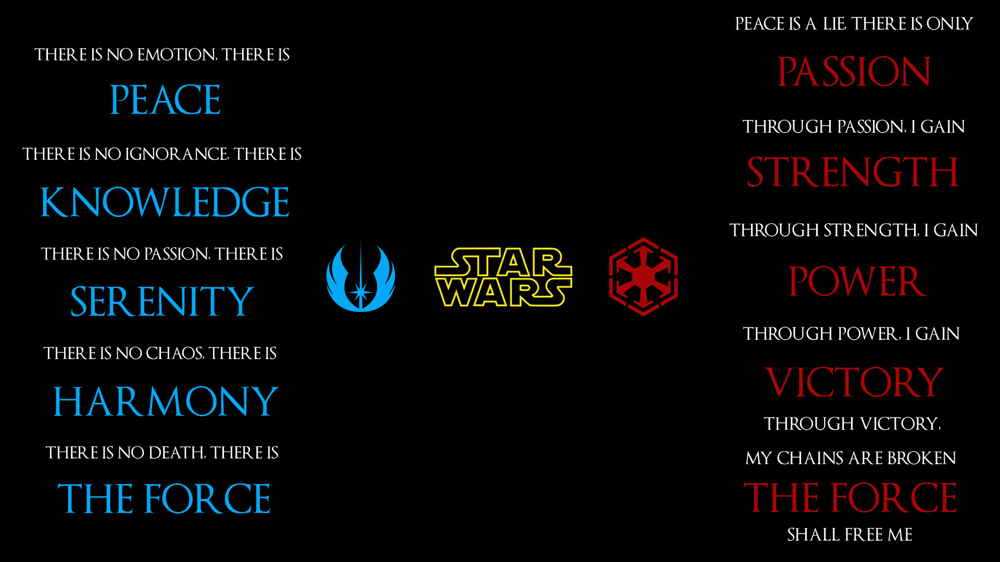
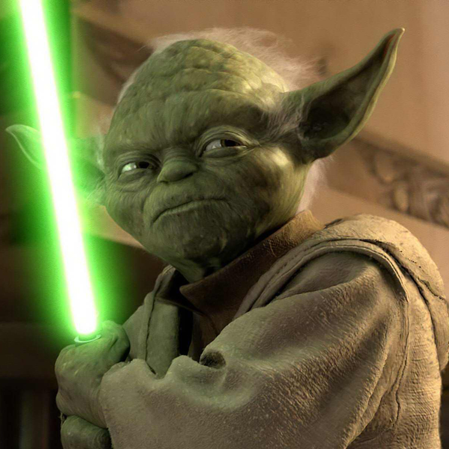
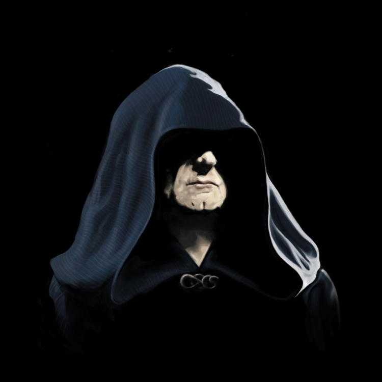
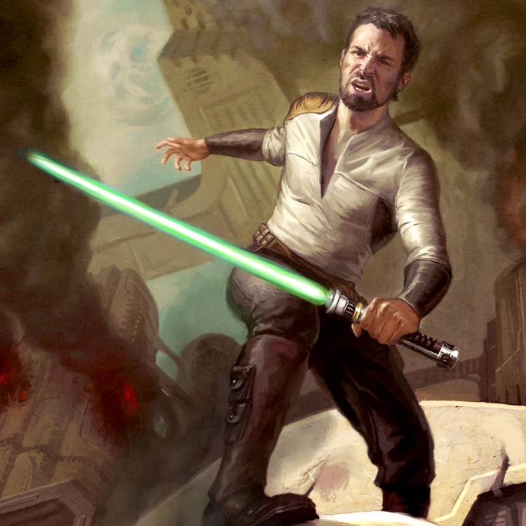

Jedi & Sith Bases
Jedis: The Jedi Code was a mantra of moral and ethical conduct expected to be adhered to by all members of the Jedi Order. A Draethos Jedi Master named Odan-Urr studied the Jedi Code in great detail, making a revised version circa 5,000 BBY, which was adopted by the Jedi Order. This is the edition of the Jedi Code that was used until Order 66 and the Great Jedi Purge that occurred in 19 BBY: "There is no emotion, there is peace. There is no ignorance, there is knowledge. There is no passion, there is serenity. There is no chaos, there is harmony. There is no death, there is the force."
Siths: The "One Master and One Apprentice" rule is the principle upon which the Order of the Sith Lords was founded. The Rule of Two was created by Darth Bane, a Dark Lord and former member of the Sith Brotherhood of Darkness who created this law after his organization fell into warlordism, becoming disorganized and weak. This ultimately resulted in their eradication by the Jedi Order. From then on, to ensure no competition, the only Sith allowed to be active are a Sith Lord and an apprentice"
The Guardians
Jedi Guardians focused all aspects of combat as an extension of their being, and trained on combining and perfecting their athletic, aviation and martial art skills with mastery of the Force. The Force skills studied by the Guardians were typically those used for quickly disabling an opponent and aiding in agility and stamina. Many were stationed within Republic planetary or sectoral government's security agencies where they worked as special peacekeepers and law enforcement agents, helping to quell riots and capture terrorists. The highest ranking Jedi Guardians were stationed at the Jedi academies as instructors tasked with passing down their experience to the young students of the Order. Those Jedi who mastered lightsaber-combat techniques (such as Mace Windu) were dubbed Weapon Masters and were among the greatest warriors of the Order
The consulars
Jedi Consulars focused on further mastery of the Force and the sharpening of mental faculties, and wielded a lightsaber only for self-defense. Overseen by the Council of Reconciliation, Jedi Consulars were often called upon to act as impartial advisers, diplomats, and historians. Most Consulars specialized as historians, archivists, librarians, archaeology, geology, biology, mathematics, and astronomy; they contributed to the growth and preservation of the Jedi Archives as "Lore Keepers" directed by the Librarian's Assembly. Some Consulars worked closely with the Republic bureaucrats to assist in greeting unaligned governments and helping them join the Republic and given the authority to hammer out a compromise or treaty during tense negotiations, backed by the full support of the Senate and Jedi Order. Some Consulars joined the Circle of Jedi Healers (headquartered out of the Coruscant Temple's Halls of Healing) and focused on the medical and humanitarian aspects of the Force, manipulating the Living Force to perform the art of healing. Those Jedi specifically predisposed to receive visions through the Force were known as "Seers", maintaining and updating the Order's holocrons; the most perceptive of these Jedi (such as Yoda) were known as Prophets and foretold the future of the galaxy.
The centinels
A Jedi Sentinel was the name given to one of the three distinct branches of Jedi that sought a balance between the other two branches, the Consulars and the Guardians. While they possessed considerable combat skills and had somewhat extensive knowledge of the Force, Sentinels blended both schools of teaching and amplified them with a series of non-Force skills, such as in the fields of security, computers, stealth techniques, demolitions, repair or medicine. These skills tended to take the forefront in their middle-road approach to problems; while a Guardian might bash down a locked door and a Consular simply knock, a Sentinel would instead use equipment available or ingenuity to pick the lock. While the role of the Sentinels within the Jedi Order had remained largely consistent throughout its history, the branch of study was first documented by the Sentinel Jedi recruiter Morrit Ch'gally in the text, The Jedi Path: A Manual for Students of the Force.
The Siths
The Sith are dedicated to sith philosophy and to mastering the dark side of the Force.[2] The Sith members, known as Sith Lords or Dark Lords of the Sith, traditionally use the title Darth-prefix before their Sith name. The Sith are the archenemies of the quasi-religious Jedi and, like them, their main weapon is the lightsaber. While Jedi are subservient to the Force and aid the Galactic Republic by utilizing the Force for peace, knowledge and defense, the Sith prefer to exploit the Force for power, aggression or personal gain; desires that inevitably led to both imperial conquest and their own self-destruction
The Dark Jedis
Not every "Dark Side"-user is a Sith; nor is every "Light Side"-user a Jedi. Dark Jedi is the unofficial name given in the Star Wars universe to antihero fictional characters attuned to the Force and adept in its dark side. The term "Sith" originally referred to a species of Force-sensitive sentients indigenous to the planets Korriban and Ziost; these people were later enslaved and ruled by exiled "Dark Jedi" from the Galactic Republic. Following centuries of interbreeding and mixing of cultures between the aliens and the exiles, the Sith would no longer be identified by their race, but by their dedication to the ancient Sith philosophy. The term and concept of "Dark Jedi" is never officially used nor endorsed as Star Wars canon anywhere within the seven Star Wars saga films. They exist by that name only in the Star Wars Expanded Universe, including video games such as Star Wars: Knights of the Old Republic and the Star Wars: Jedi Knight series. Darth Vader was described as "Dark Lord of the Sith" in the published screenplay. Because the term Sith was never spoken in the original trilogy, early Expanded Universe products usually considered the "evil Jedi," those who joined the dark side of the Force, as "Dark Jedi." In his novel series The Thrawn Trilogy, author Timothy Zahn labeled Sith Lord Darth Vader and Emperor Palpatine as Dark Jedi, and the term "Sith" was never mentioned in the series until later reprints of the novels.
The Gray Jedis
The Gray Jedi Order was a branch of the Jedi that broke off from the Order in 132 BBY. It originated as a splinter group from the exiled Potentium. The Gray Jedi believed in balance, not only in the Force, but in every other aspect of the galaxy as well. However, unlike the Potentium, the Gray Order preferred an active role in shaping the ebb and flow of the Force in the galaxy, keeping watch over galactic affairs without intervening unless they deemed it necessary. They believed that the Force did indeed have distinct Light and Dark sides, inherently good and evil, regardless of the user's intentions. But, without one side, the other could not exist, and to truly be one with the Force, both must be mastered. Like all Jedi, they wielded lightsabers but, unlike them, studied and practiced all aspects of the Force.